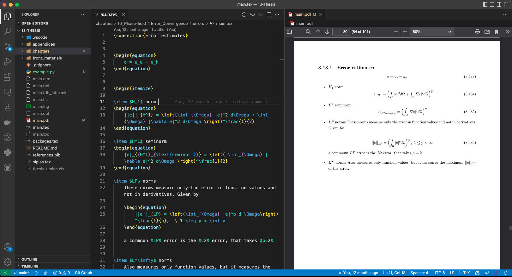

Using LaTeX in Visual Studio Code 📄✍️#
This guide will help you set up and use LaTeX within Visual Studio Code (VS Code), including the installation of necessary tools and the configuration of your tasks.json file for building LaTeX documents with XeLaTeX.
Prerequisites 🛠️#
Before working with LaTeX in VS Code, ensure LaTeX is installed on your system:
macOS: Install MacTeX via Homebrew:
brew install --cask mactex
Windows: Install MiKTeX from miktex.org.
Linux: Install TeX Live using your package manager:
sudo apt-get install texlive-full
Installing LaTeX Workshop Extension 🔧#
To get LaTeX working in VS Code, you’ll need to install the LaTeX Workshop extension:
Open VS Code.
Go to the Extensions view (Ctrl+Shift+X).
Search for LaTeX Workshop and click Install.
This extension provides features like auto-compiling, linting, and PDF viewing.
Configuring tasks.json ⚙️#
Your tasks.json file is already set up to use XeLaTeX to compile the document and open the resulting PDF file. Here’s a breakdown of the key components:
Label: The task is labeled “xelatex” to indicate it runs XeLaTeX.
Command: Runs xelatex on the main.tex file.
Group: Defines it as the default build task.
Presentation: Configures how the output is displayed.
Below is an example of your tasks.json configuration:
{
"version": "2.0.0",
"tasks": [
{
"label": "xelatex",
"type": "shell",
"command": "xelatex -interaction=nonstopmode main.tex",
"group": {
"kind": "build",
"isDefault": true
},
"presentation": {
"reveal": "always",
"panel": "shared"
}
},
{
"label": "Open pdf",
"type": "shell",
"command": "open -a Preview main.pdf",
"group": {
"kind": "build",
"isDefault": true
},
"presentation": {
"reveal": "always",
"panel": "shared"
}
}
]
}
This configuration automatically runs xelatex to compile your LaTeX file and opens the PDF using the macOS Preview application.
For Windows or Linux, you can modify the command to open the PDF with the default PDF viewer:
Windows:
"command": "start main.pdf"
Linux:
"command": "xdg-open main.pdf"
Using the Build Tasks 🛠️#
Once your tasks.json file is set up, you can use the tasks to build your LaTeX documents and open the resulting PDFs.
To build the LaTeX document: Press Ctrl+Shift+B to run the default build task (the xelatex task).
To open the PDF: If configured, the PDF will automatically open using the “Open pdf” task after the document is built.
Customizing LaTeX Workshop 🎨#
To enhance your experience, you can customize LaTeX Workshop settings for compiling with XeLaTeX:
Open VS Code settings (Ctrl+,).
Search for latex-workshop.latex.tools and add the following configuration to set XeLaTeX as the default tool:
"latex-workshop.latex.tools": [ { "name": "xelatex", "command": "xelatex", "args": [ "-synctex=1", "-interaction=nonstopmode", "-file-line-error", "%DOC%" ] } ]
Live PDF Preview (Optional) 👀#
LaTeX Workshop also provides a live PDF preview feature:
Open the command palette (Ctrl+Shift+P).
Search for LaTeX Workshop: View PDF to open the PDF viewer within VS Code.
This allows you to view the compiled PDF directly without needing to open it in a separate viewer.
Summary 📚#
By following these steps, you can easily set up LaTeX in Visual Studio Code using the LaTeX Workshop extension and the provided tasks.json configuration to compile and view your LaTeX documents. Make sure to adjust the PDF viewer commands depending on your operating system.